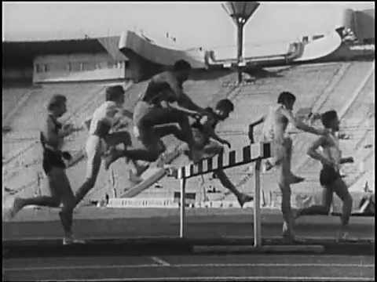

Челночный бег 10х10, 3х10: техника выполнения с видео, нормативы, программа и комплексы
 Турниры Звезды кроссфита Фото Видео Залы Термины Экипировка Программы тренировок Новости Упражнения Комплексы Для новичков Что такое кроссфит? Где можно бесплатно заниматься кроссфитом? Как кроссфит влияет на сердце? Как начать заниматься кроссфитом? Кроссфит для начинающих Травматизм в кроссфите Питание Рецепты Таблицы калорийности Диеты БЖУ Продукты питания Массонабор Сушка Спортивное питание Здоровье Спортивные травмы Метаболизм Физиология Эндокринная система Главная Кроссфит упражнения Кроссфит упражнения 19K 0 02.03.2017 (последняя редакция: 05.05.2019)
Челночный бег
Содержание:
Польза Техника выполнения упражнения Исходное положение Скорость бега Разворот Ускорение Типичные ошибки Программа тренировок Нормативы челночного бега 10х10 Нормативы челночного бега 3х10 Мальчики Девочки Кроссфит комплексы с челночным бегом © Daxiao Productions — stock.adobe.comПоделиться:
Челночный бег – это распространенная по всему миру разновидность кардио-нагрузки, направленная на развитие скоростно-силовых качеств атлета. При выполнении челночного бега, атлет должен пробежать одну и ту же дистанцию в прямом и обратном направлении несколько раз с разворотом на 180 градусов в конечной точке дистанции. Наиболее популярна среди спортсменов техника челночного бега 10х10, 3х10.
Польза
Подобный метод тренировок полезен тем, что способствует увеличению взрывной силы мышц ног, улучшению работы всей сердечно-сосудистой системы, развитию координации и силовой выносливости. Нормативы челночного бега используют для оценки физической подготовки не только спортсменов, но и работников разных силовых структур.
Обычно челночный бег осуществляется на короткие дистанции от 10 до 30 метров, однако в редких случаях дистанция может достигать и отметки в 100 метров. Благодаря своей многосторонней пользе, это упражнение получило популярность в фитнесе, кроссфите, различных единоборствах, а также входит в обязательную программу физической подготовки в школах, специализированных академиях при государственных органах и в Вооруженных Силах РФ.
Сегодня мы разберемся, как правильно бегать челночный бег, а также в чем заключается практическая польза от этого упражнения на человеческий организм с точки зрения всестороннего развития спортсмена.
Техника выполнения упражнения
Техника челночного бега имеет несколько разновидностей, выбор которых зависит от того, на какую дистанцию выполняется челночный бег: 10х10, 3х10, 4х9. Однако по своему усмотрению Вы можете увеличить дистанцию в несколько раз руководствуйтесь своим уровнем физической подготовки и самочувствием.
Так или иначе, техника челночного бега практически одинакова для любой дистанции. Учитывать следует лишь тот фактор, что в беге на короткие дистанции атлет сразу начинает выполнять упражнение с наибольшей интенсивностью, используя весь свой мощностной потенциал; при более продолжительном челночном беге (например, 10х10 или 4х100) первые 4-6 отрезков следует выполнять в обычном темпе, стараясь не расходовать большого количества энергии, чтобы не выбиться из сил раньше времени. Лучше оставьте напоследок большую часть скоростно-силовых ресурсов своего организма, чтобы преодолеть необходимое расстояние за максимально короткий временной промежуток и показать по-настоящему выдающийся результат.
Выполнять упражнение стоит следующим образом:
Исходное положение
Классическая стартовая позиция: ставим опорную ногу вперед, весь центр тяжести стараемся держать над ней. Квадрицепс опорной ноги напряжен, как пружина, корпус наклонен чуть-чуть вперед, спина прямая, руки держим на уровне ребер. Старт должен получиться максимально взрывным и быстрым, чтобы преодолеть первый отрезок за минимальное время. Для действительно взрывного старта нам необходимы сильные и хорошо развитые ноги, поэтому уделяйте больше внимания упражнениям, развивающим взрывную силу квадрицепсов: приседания со штангой с паузой в нижней точке, становая тяга сумо, прыжки на коробку, приседания с выпрыгиванием и т. д.
Еще один вариант исходной позиции низкий старт:
© Daxiao Productions — stock.adobe.com
Скорость бега
Во время самого забега нам нужна максимальная скорость. Для этого после каждого шага следует приземляться не на всю стопу, а только на носок. Чтобы наработать этот навык, замените свое стандартное кардио на прыжки со скакалкой, тогда сустав Лисфранка адаптируется к постоянному приземлению на носок, и челночный бег будет даваться значительно легче.
© Daxiao Productions — stock.adobe.com
Разворот
В конце каждого отрезка нужно выполнить разворот на 180 градусов. Для этого необходимо резко снизить скорость и сделать стопорящий шаг, повернув ступню передней ноги на 90 градусов в сторону поворота – это движение затормозит Вас, но не погасит инерцию полностью.
© Daxiao Productions — stock.adobe.com
Ускорение
На последнем отрезке нужно выжать из своего тела максимум возможного и сделать последнее взрывное ускорение, не задумываясь о том, что вскоре нужно будет остановиться, Вы должны продолжать увеличивать скорость прямо до линии финиша.
Видео челночного бега Вы можете увидеть ниже. В нем очень четко показана техника выполнения челночного бега:
Типичные ошибки
При изучении техники выполнения челночного бега 10х10 многие начинающие спортсмены сталкиваются со следующими проблемами, мешающими им извлечь максимум пользы из этого упражнения:
Неправильное распределение нагрузки. Если Вы бежите 10 равных отрезков челночным бегом, выносливость обычно подходит к концу после первой половины. Чтобы этого избежать, начинать бег надо со средней интенсивностью, с каждым отрезком стараясь увеличивать скорость, используя взрывную силу мышц ног. Слишком большой объем нагрузки. Не стоит перебарщивать с тренировочным объемом, когда речь идет о подобном высокоинтенсивном кардио, особенно, если вы страдаете различного рода болезнями сердечно-сосудистой системы. Скорее всего, ВЫ получите больше вреда, чем пользы. Слишком медленная остановка перед разворотом. Не нужно снижать скорость бега, чтобы спокойно развернуться, разворачиваться нужно в одно движение, резко развернув ногу на 90 градусов – так Вы сохраните силу инерции и не погасите скорость до нуля. Неправильная частота дыхания. Во время выполнения челночного бега следует дышать в режиме «2-2», делая два шага во время вдоха и два шага во время выдоха. Дышать следует только через нос. Не забывайте должным образом разминаться, так как челночный бег предполагает включения в работу огромного количества мышц, суставов и связок.© Daxiao Productions — stock.adobe.com
Программа тренировок
Данная программа челночного бега рассчитана на новичков, которые только начинают знакомиться с этим упражнением. Она насчитывает всего 6 тренировок, между которыми следует делать перерыв в 2-3 дня, чтобы организм успевал восполнять энергозатраты. Однако повторив её несколько раз, Вы сможете значительно улучшить свой максимальный результат в челночном беге. Лучше всего выполнять эти тренировки на беговом стадионе или в легкоатлетическом зале. Там Вы сможете точно отмерить необходимое расстояние.
№ тренировки: Количество подходов и необходимое расстояние: 1 Три раза выполните челночный бег 4х9. 2 Пять раз выполните забег 4х9. 3 Три раза выполните забег 4х15. 4 Пять раз выполните забег 4х15. 5 Три раза выполните забег 4х20. 6 Один раз выполните забег 10х10.Нормативы челночного бега 10х10
Челночный бег является частью обязательной программы по физической подготовке для военных в различных подразделениях. В приведенной ниже таблице представлены актуальные нормативы, действующие для военных, служащих по контракту, и военных из подразделений специального назначения, утвержденные приказами МВД РФ.
Контрактники Мужчины Женщины До 30 лет Старше 30 лет До 25 лет Старше 25 лет 28,5 сек. 29,5 сек. 38 сек. 39 сек. Спецназ 25 сек.
Нормативы челночного бега 3х10
Нормативы для школьников (мальчиков и девочек) представлены ниже. Скачать и распечатать таблицу можно по ссылке .
Возраст Уровень развития КС низкий ниже среднего средний выше среднего высокийМальчики
7 11,2 и больше 11,1-10,9 10,8-10,3 10,2-10,0 9,9 8 11,4 // 10,3-10,1 10,0-9,5 9,4-9,2 9,1 // 9 10,4 // 10,3-10,0 9,9-9,3 9,2-8,9 8,8 // 10 9,9 // 9,8-9,6 9,5-9,0 8,9-8,7 8,6 // 11 9,7 // 9,6-9,4 9,3-8,8 8,7-8,5 8,4 // 12 9,22 // 9,1-9,0 8,99-8,5 8,4-8,3 8,2 // 13 9,3 // 9,2-9,1 9,0-8,5 8,4-8,3 8,2 // 14 9,0 // 8,9-8,7 8,6-8,1 8,0-7,8 7,7 // 15 8,5 // 8,4-8,3 8,2-7,9 7,8-7,7 7,6 // 16 8,1 // 8,0-7,9 7,9-7,5 7,4-7,3 7,2 // 17 8,5 // 8,4-8,2 8,1-7,6 7,5-7,3 7,2 //Девочки
7 11,7 и больше 11,6-11,4 11,3-10,6 10,5-10,3 10,2 8 11,2 // 11,1-10,8 10,7-10,1 10,0-9,8 9,7 // 9 10,8 // 10,7-10,4 10,3-9,7 9,6-9,4 9,3 // 10 10,4 // 10,3-10,1 10,0-9,5 9,4-9,2 9,1 // 11 10,1 // 10,0-9,8 9,7-9,1 9,0-8,8 8,7 // 12 10,0 // 9,9-9,7 9,6-9,1 9,0-8,8 8,7 // 13 10,0 // 9,9-9,7 9,6-9,0 8,9-8,7 8,6 // 14 9,9 // 9,8-9,6 9,5-8,9 8,8-8,6 8,5 // 15 9,7 // 9,6-9,4 9,3-8,8 8,7-8,5 8,4 // 16 9,5 // 9,4-9,2 9,1-8,4 8,6-8,5 8,4 // 17 9,7 // 9,6-9,4 9,3-9,1 9,0-8,8 8,7 //Кроссфит комплексы с челночным бегом
Если Вам начал приедаться свой тренировочный процесс, попробуйте выполнить несколько функциональных комплексов из таблицы ниже. Это привнесет что-то новое в Вашу программу и разнообразит весь тренинг. Комплексы рассчитаны на достаточно опытных атлетов, обладающих хорошей силовой выносливостью, так как с подобным сочетанием аэробной и анаэробной нагрузки, да еще и в таком огромном объеме, новичок просто не справится.
Kit-Kat Выполнить 60 подтягиваний, 60 ситапов, 15 толчков штанги, 50 отжиманий, челночный бег 10х10. Всего 3 раунда. Lira Выполнить челночный бег 6х10 и 15 бёрпи. Всего 10 раундов. Maraphon Выполнить забег на 250 м, 5 подтягиваний, 10 отжиманий, 5 подъемов ног в висе и челночный бег 4х10. Всего 4 раунда. Ralph Выполнить 10 классических становых тяг, 10 бёрпи и челночный бег 6х10. Всего 3 раунда. Bodyguard Выполнить челночный бег 4х10, 40 двойных прыжков со скакалкой, 30 отжиманий и 30 приседаний с выпрыгиванием. Всего 3 раунда.Иногда для того, чтобы разнообразить выполнение упражнения, практикуют челночный бег с переноской 2-3 предметов.
Оцените материалПоделиться:
Автор Ярослав Хватов
Стаж тренировок - более 8-ми лет. Победитель и призёр всероссийских турниров по пауэрлифтингу и становой тяге. Кандидат в мастера спорта по становой тяге.
Редакция cross.expert
Содержание:
Польза Техника выполнения упражнения Исходное положение Скорость бега Разворот Ускорение Типичные ошибки Программа тренировок Нормативы челночного бега 10х10 Нормативы челночного бега 3х10 Мальчики Девочки Кроссфит комплексы с челночным бегом 2020Атлетка Брук Энц рассказала об изменениях в своем мировоззрении из-за событий в США
Календарь событий
всего событий 66Регистрируйтесь на сайте
01Выполняйте комплексы тренировок
02Сохраняйте результаты и делитесь прогрессом
03Популярные материалы
Доношение гирь Жим гантелей лежа Подтягивания широким хватом Прыгающие подтягивания Классическая становая тяга со штангой Отжимания на одной руке Рывковый баланс штанги Тяга штанги к поясу Последние новости 08.06 Атлетка Брук Энц рассказала об изменениях в своем мировоззрении из-за событий в США 19.05 Кроссфит-атлетка Брук Энц станет участницей шоу “UltimateTag” 03.05 Разбитые надежды: сезон CrossFit Games 2020 у мастеров и подростков отменен 01.05 Китай повторно закрывает спортивные залы 29.04 Владельцы CrossFit-залов ходатайствуют перед правительствами по всему миру показать еще #CrossFit Games #Crossfit Open #Dubai CrossFit Championship #SouthFit CrossFit Challenge #Pandaland CrossFit Challenge нет комментариевДобавить комментарий
ОтменитьАвторизуйтесь:
Чтобы оставить комментарий, вам необходимо зарегистрироваться на сайте или войти с помощью ранее используемой анкеты соцсети.
Вконтакте Facebook Google Mail.ruАвторизуясь, вы соглашаетесь с правилами пользования сайтом и даете согласие на обработку персональных данных
Рубрики
644 Новости 25 Звезды кроссфита 125 Здоровье 170 Кроссфит упражнения 10 Об упражнениях в деталях 384 Питание 39 Полезности для новичков 3 Программы питания 47 Программы тренировок 18 Растяжка 21 Спортивная экипировка 519 Спортивное питание 859 КомплексыПоследние комментарии
/ Питание для эктоморфа: советы по выбору рационаМне кажется, автор что-то напутал. По формуле 60 х Масса тела х уровень активности получается, что мне нужно потреблять около 6000 ккал в день? Это же фантастика.
Sanjo II 27.09.2020 / Кинг Конг (King Kong)Станова 170 взяття 85
Олександр Анікольчук 14.09.2020 / Как правильно выбрать велосипед для города?Да, безусловно велосипед удобный способ передвижения и для здоровья полезно. Плохо что в нашем городе практически отсутствуют велодорожки. На счёт ободных тормозов не согласна, лучше выбирать дисковые...
Мария Петровская 13.09.2020Популярное на сайте
7K 1 Диеты для похудения Белковая диета суть, плюсы, продукты питания и меню 1K 0 БАДы (биологически активные добавки) Коэнзим CoQ10 VPLab обзор БАДа 1K 5 Спортивные травмы Почему сводит мышцы и что делать 7K 0 Кроссфит упражнения Горизонтальные подтягивания 9K 2 Диеты для похудения Низкоуглеводная диета правила, режим питания, продукты и примерное меню на неделю Кроссфит залы Комплексы Упражнения Программы Для новичков Питание Спортивное питание Здоровье атлетов Фото Видео Экипировка Травмы Термины Новости Турниры
На сайте собраны все кроссфит залы, комплексы, упражнения, а также новости в России и мире.
Зарегистрировано
пользователей
2636
Подписывайся на наши группы в социальных сетях
Сотрудничество
Пользовательское соглашение Контакты Реклама Команда Турниры Кроссфит залы Политика конфиденциальности Обратная связьРубрики
Для новичков Упражнения Комплексы Спортивное питание Программы тренировок Питание Здоровье Спортивная экипировка Фото ВидеоДля новичков
Что такое кроссфит? Как начать заниматься кроссфитом? Где можно бесплатно заниматься кроссфитом? Полезен ли кроссфит для здоровья? Как кроссфит влияет на сердце? Кроссфит для начинающих Эффективен ли кроссфит как средство похудения для девушек?Cross.Expert® - все права защищены
Копирование материалов сайта разрешено только с активной индексируемой ссылкой на источник × Авторизация Вконтакте Facebook Google Mail.ruАвторизуясь, вы соглашаетесь с правилами пользования сайтом и даете согласие на обработку персональных данных
Наши группы
в соц. сетях